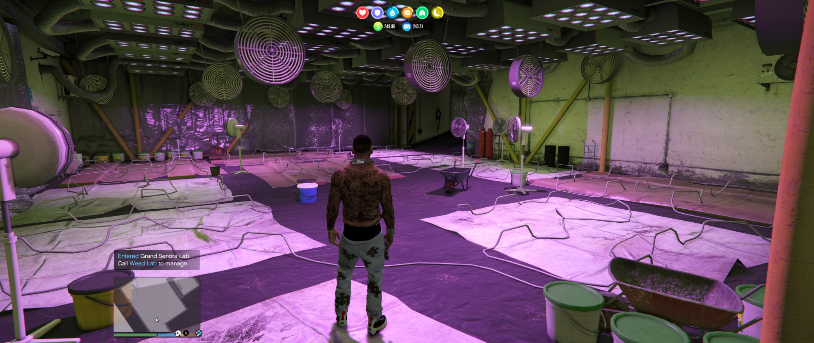
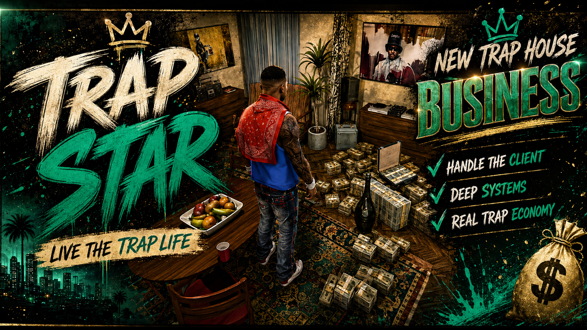

The Trap Star is a drug-dealing management sim for GTA V story mode. Corners with runners on them, plugs you call and meet, a burner full of customers who text you, and product that is only ever worth what its purity says it is. It runs beside On The Blade and the two share one city — the same ground, the same heat, the same consequences.
Everything is in person. Your dealers stand where you posted them and customers walk up to them. Money stays on the corner until you drive over and take it. Weight is either delivered at a premium or handed to you by somebody whose face you know — and who might not be selling.
Runners sell around the clock whether you are there or not — but the money stays with them until you come and get it. Stand on your own corner and it is visibly a business: your runner where you put him, a customer walking up every few seconds, and a bank that grows while you watch. Leave the cash sitting and it remits itself at midnight for a cut, a runner holding too much can get taken off, and a warrant seizes half of it along with the trap. Collect from a runner enough times and he starts sending his share in himself, at no cut — the corner stops needing you exactly as you outgrow the trip.
Four suppliers, each a contact in your phone. Call one, he answers, and the order menu opens — weed through fentanyl depending on who you know, with prices, credit and maximum weight that all move with your standing. Have it delivered straight into a trap for 18% over, or drive out and meet him in person at the label price. He is a real ped at a real spot — and sometimes he was never selling. A rip-off puts armed men on the ground with your money already spent; win the fight and the deal completes anyway.
Customers text you: what they want, what they will pay, how long they will wait. Drive to the spot and hand it over in person — priced on what is actually in the bag, not what was agreed on the phone, so cutting your product between the text and the meet only cheats yourself. Regulars learn what you sell and judge you against it. Some callers are a setup, and some are police.
A 43-product catalogue across five tiers, with a handful enabled by default and the rest a config edit away. Purity is tracked by weighted average everywhere product moves — mix cheap weak supply into good stock and you have ruined the good stock. Every corner has a taste and a minimum it will move; every neighbourhood pays what it pays.
Every gram moved draws attention in proportion to how conspicuous the block already is. Busy corners carry a heat clock you can read; quiet ones never trip it. A warrant shuts the corner, takes the trap stock and half the bank, and can hold your runners. Kill a rival dealer and his stash bag is yours for the taking — but somebody might come for it on the spot, and everything about it reads as weakness to the people watching.
The Trap Star and On The Blade read and write one shared world file. Ground a crew holds in one mod is ground you cannot work in the other, vice attention and narcotics attention bleed into each other on the same block, and running both businesses on one corner heats it faster than either alone. Each mod runs fine without the other — the file is a handshake, not a dependency.
Twenty-four corners, found by getting close to them, most with somebody already working them. Take one by running its crew off, out-selling it hand to hand inside its own circle, or buying the gang out — then staff it, level it, and watch the pause map shade the block in your colour. Force leaves grudges: gangs telegraph their push-backs by text, and being stood on your corner when they arrive is a different night than hearing about it after.
Supply you grow instead of buy. Plant pots at any property — pick a seed strain (bagseed to exotic cuts), feed them or don't — and the crop moves through real stages over game days: seeds in, vegetating, flowering, ready. Leave it standing and it goes over; the lab worker warns you once. The kitchen runs the hard book: meth cooks in the warehouse, crack cooks off your own shelf coke, and the fentanyl press pays like top shelf smells like trouble. Everything running SMELLS — the smell is heat, carbon filters halve it, and a warrant burns whatever's in.
Name your set, pick its colour, pick its look. The map paints every block you hold in your colour — in both games — your corner dealers dress in your look, the couriers sign their texts with the name, the truckload van carries it, and rival gangs speak it when they come calling. One street, one name, one flag.
Reputation is earned by the grind — hands served, weight the corners move, re-ups, truckloads — and every few points unlocks something real: more regulars, faster crews, doubled credit, bigger orders, an extra man on every corner, cheaper buyouts, the couriers. Four one-shot beats land along the climb: a sample run on a clock, a leak about your own pickup, a sit-down with a gang you're beefing, and an example the whole street hears about. The menu shows the next rung by name, so every point is a point toward something.
Check day floods the block with money; weekend nights boom; rain empties the corners. A 90%-plus harvest gets NAMED by the street and sells at a premium while the name lasts. Big visible cash sometimes picks you up an unmarked tail — watch your mirrors. Counterfeit bills surface at the morning count unless a money counter catches them in the buyer's hand. An overdose puts the block in mourning and your demand with it. Run hot for long enough and the heat gets a face: a named detective opens a case, turns up watching from a distance, and tails you in a grey sedan that makes every turn you make — lose him, and whatever you do, don't lead him to a door you own. He takes $25,000 to lose the file early. Let the case age instead and he stops watching and walks over for a sit-down: his final number, your answer, and consequences either way. And when it all gets heavy — throw the block a party. A neighbourhood that loves you tells the police nothing.
Run both businesses and they feed each other in ways no single mod can: the girls hear things from clients — a corner that's being watched, a stash somebody bragged about, a whale who wants weight quietly — and it reaches your burner as pillow talk. A watched corner is worth clearing before the raid lands, and the whale pays over the odds when he rings. And the venues wash your box money: a daily capacity that scales with the roster, a fee, and clean paper landing by wire the next day. Dirty money is heat. Clean money isn't.
There is a point where you stop being the guy on the corner. Buy the office in Davis and the war room opens: your rank measured in what you have actually taken, every block you hold, every hand on the payroll, the heat, the open beefs and where you stand with each plug — one wall, read at a glance. Then promote your best runner. A lieutenant takes a piece of the operation and runs it at his own skill: corners that earn more under his hand, logistics that sweep every block home at no cut without being asked, or muscle that makes rival crews think twice, juggers pick other marks, and money runs stop getting jumped. He works whether you are in the room or not. That is the whole point of him.
Build something worth taking and somebody comes to take it. A cartel moves on the city in four acts, each one a fight you either stand in or read about afterwards: five men on your busiest corner, a hit squad sent for your best hand where he works, their resupply convoy crossing town with three guns on it, and finally a yard in El Burro Heights where the man himself is home. Lose an act and it costs you precisely what it threatened — the corner's bank, your best runner in hospital for four days, their shelves filling while yours don't — and then it comes back two days later. Win the last one and it does not just end: every plug in Los Santos prices lower for you and opens their allocation wider, for good. You did not survive the war. You inherited what it was fought over.
The gangs cook too. Drive past a Ballas kitchen, a Vagos cook or a Lost press and you have found it; walk up to the door and you can take it, but their people come off the porch first and the last man standing keeps the shelves. Strip one and you leave with weight at their purity and a grudge that will find you. Because it runs both directions: keep a real beef alive while a crop of your own is in the ground and they will telegraph a hit on your lab. Be standing there when it lands and you keep the crop and the respect. Be somewhere else and you get a text from the lab worker explaining what he saw through the window.
The work wears on the man doing it. Every hand-off adds a little stress and every bust or raid adds a lot, none of it bleeds off on its own, and past a point your hands shake and the street prices you accordingly — you can watch the number sag. Going home settles you once a day; so does smoking your own supply, which comes off the shelf in real grams. Meanwhile the hard book got harder: meth and fentanyl need chemicals bought by the cook, grow lamps and lab gear are real money that pay back in weight and purity, and you can put a runner on the lab full time so the batches come in on his shift instead of yours. And when you would rather not carry it, designate any car as the trunk — the product rides with the plate, movable and parkable and losable, because a car that dies takes the load with it.


The city notices you. A feed that reports what you actually did and gets louder the better known you are, a plate that goes on a list and a body shop that takes it off, somebody else running an operation of their own — and a market that finally says why the price moved.
The empire. A headquarters with a war room and a lieutenant who runs a piece of the operation whether you're there or not — and a cartel that comes to take the city off you in four acts. Rival labs to strip and your own to defend, chemicals and equipment behind the hard book, and a dealer who wears it: stress that shows in your prices until you go home.
The living city. Prices that move with the hour and the weather, droughts that pay whoever can actually supply, plugs who ration strangers and hold the line for family, a city dense with rival trade — and full controller support, so the whole empire runs from the couch.
The empire update. Production you grow instead of buy, a set with your name on it painted across two games, an unlock at every rung of the climb, and a city that breathes back — check days and mourning blocks, a detective with your file, pillow talk from the other business, and a block party when it all gets heavy.
The fusion update. The whole business becomes bodies: demand finds you on foot, plugs stand their compounds with faces on your phone, money walks to your properties the way drugs do, and every gram and dollar that moves, moves hand to hand — at a scale that matches the weight.
The street update. The business stops being a spreadsheet that pays on the hour: your runners are visible people customers walk up to, your money sits where it was made until you fetch it, and every deal — buying or selling — happens with somebody standing in front of you.
The foundation. Everything the street update stands on.